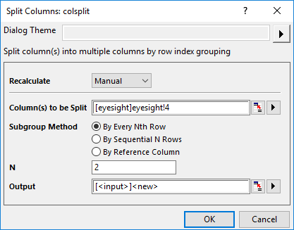
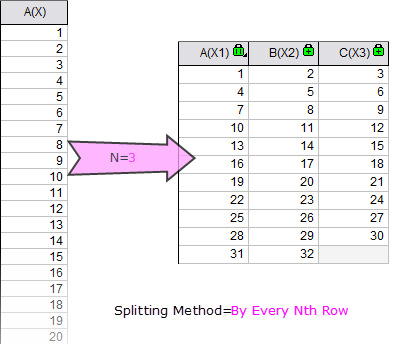
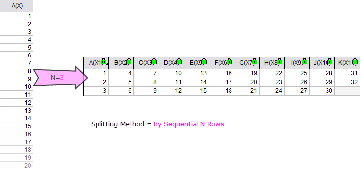
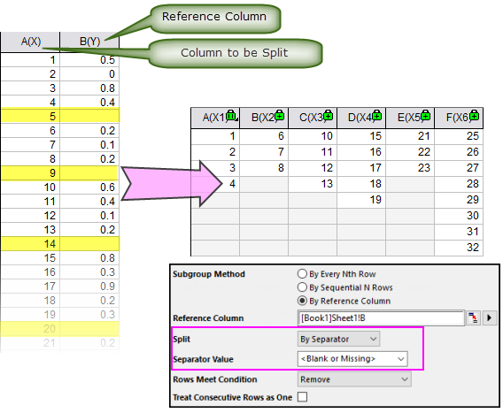
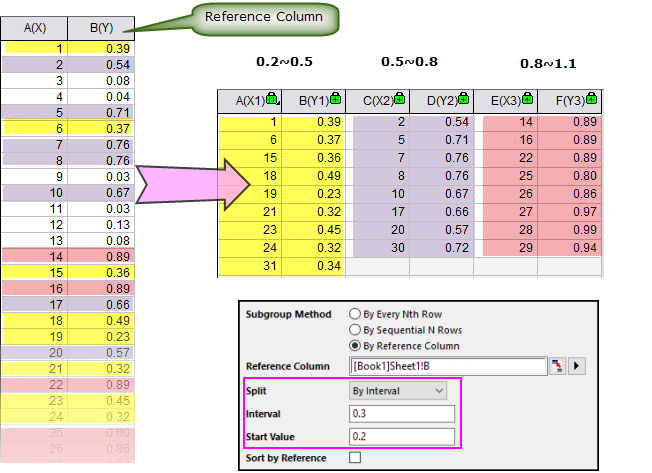

Spalten aufteilen
Split-Columns
Wenn Sie eine oder mehrere Spalten in mehrere Spalten aufteilen möchten, können Sie das Hilfsmittel Spalten aufteilen: colsplit verwenden.
Mit dem Hilfsmittel Spalten aufteilen können Anwender:
- bei aktiviertem Arbeitsmappenfenster Restrukturieren: Spalten aufteilen auswählen.
oder
- den Befehl
layextract -d im Befehlsfenster ausführen.

Dieses Hilfsmittel teilt die festgelegten Spalten durch Untergruppierung auf. Die drei Methoden zur Untergruppierung sind folgende:
-
Nach jeder N-ten Zeile
- Jede N-te Zeile wird als eine Gruppe betrachtet. Wenn N zum Beispiel 3 ist, gäbe es 3 Gruppen. Die erste Gruppe hat die Daten aus den Zeilen 1, 4, 7 ... 1 + 3 * M, die zweite Gruppe erhält die Daten aus den Zeilen 2, 5, 8, ... 2 + 3 * M und so weiter.
- 
-
Nach aufeinanderfolgenden N Zeilen
- Die aufeinanderfolgenden N Zeilen werden als eine Gruppe betrachtet. Wenn zum Beispiel N gleich 5 ist, werden die Daten von Zeile 1 bis Zeile 5 die erste Gruppe, Zeile 6 bis Zeile 10 werden die zweite Gruppe und so weiter.
- 
-
Nach Referenzspalte
- Es wird eine Referenzspalte festgelegt, um die Quellspalte aufzuteilen. Sie können die Quellspalte gemäß den Werten in der Referenzspalte aufteilen:
- Nach Trennzeichen
- Sie können einen Wert als Trennzeichen festlegen (einschließlich <Leer oder Fehlend> oder <Text>), um die Quellspalte in mehrere Spalten zu teilen.
- 
- Wenn Sie den Wert des Trennzeichens festgelegt haben, können Sie mit der Option Zeilen erfüllen Bedingung entscheiden, wie die Zeilen die Bedingungen erfüllen: 1) Die Zeilen entfernen (wie die Zeile im obigen Screenshot); 2) Die Zeile als Anfang des neuen Blocks verwenden; 3) Die Zeile als Ende des aktuellen Blocks verwenden.
- Sie können mit dem Kontrollkästchen Aufeinanderfolgende Zeilen als eine betrachten auch festlegen, ob aufeinanderfolgende Zeilen (erfüllen die Bedingung für das Trennzeichen) als ein Trennzeichen betrachtet werden.
- Nach Intervall
- Sie können das Interball und den Anfangswerts festlegen, um mehrere Bereiche in der Referenzspalte zu definieren und so die Quellspalte aufzuteilen.
- 
- In diesem Beispiel wurden die Datenpunkte in festgelegten Bereichen (0,2~0,5, 0,5~0,8 und 0,8~1,1 und so weiter) übernommen und in verschiedenen Untergruppen gespeichert. Um den Bereich festzulegen, müssen Sie den Anfangswert und das Intervall angeben.
- Sie können die sich ergebenden Untergruppen nach den Werten in der Referenzspalte sortieren, indem Sie das Kontrollkästchen Nach Referenz sortieren aktivieren.